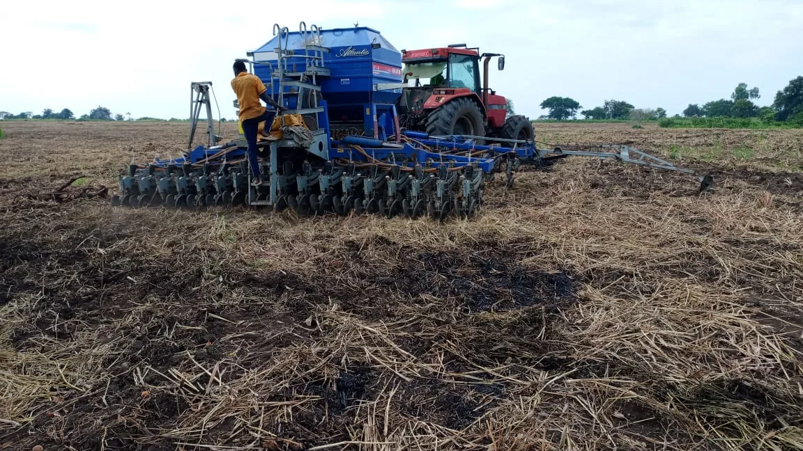

Season B planting is underway across the rice and sesame blocks
Draft — for client review before publishing.
Season B opened this month with rice and sesame going into the ground first, taking advantage of the heavier rains this half of the year brings to Amuru. The borehole and irrigation water tower are running alongside the rains to keep the rice blocks at even moisture through establishment.
Maize, soya beans and sorghum — all grown across both seasons at Normah — follow shortly after, on the same rotation the farm has used since it began mechanised production.
